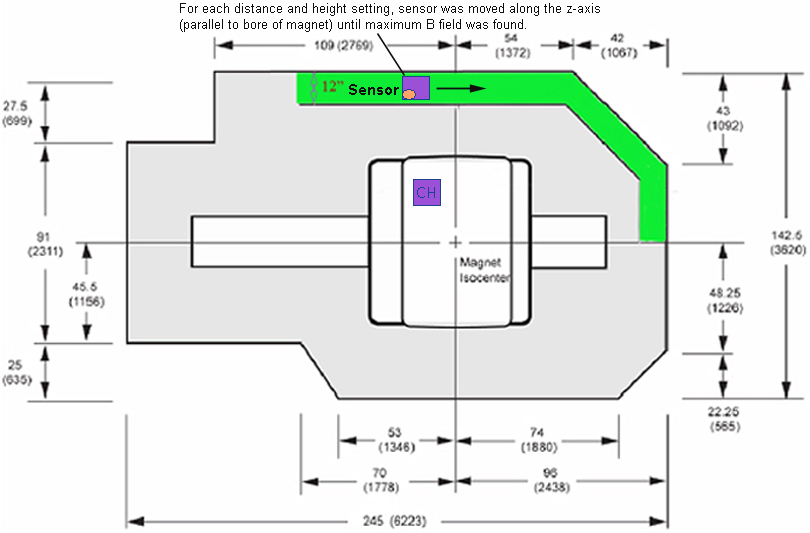
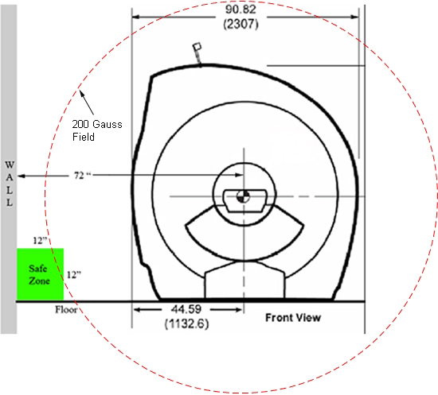
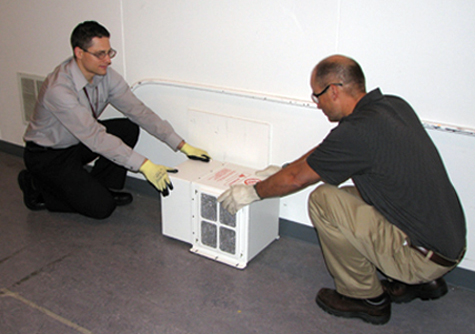

Operating Documentation
Direction 5670006, Rev# 1
Discovery MR750w GEM Service Methods
Module Version 6.0, Version Date 6/20/11
Operating Documentation |
This procedure describes the handling of ferrous objects in the Magnet Room when various conditions exist. The GE Healthcare MR Pre-Installation Manual (PIM) describes the minimum Magnet Room size, primarily for the serviceability areas necessary to service devices by the Field Engineer. There are several components that are ferrous within the Magnet Room. The Blower Box Motor Assembly is an example of a Field Replaceable Unit (FRU) that is ferrous. All ferrous material handling must comply with magnet safety precautions discussed in MR Magnet - Safety Requirements.
There are three categories of room size to be identified before moving ferrous material within the Magnet Room. Correspond the site's room size to one of the situations, and follow the guidelines described in the next section:
Room meets or exceeds the minimum (min.) room size, and ample space exists outside of the 200 Gauss field. (See Section 2.1.)
Room meets the minimum room size, but has no clear service path outside of the 200 Gauss field. (See Section 2.2.)
Room is less than the minimum room size, and there is no alternate exit except past the magnet. (See Section 2.3.)
| ||||
| possible personal injury or equipment damage! | ||||
| some Field replaceable Units (FRU's) contain ferrous material. any field strength greater than 200 gauss will forcibly attract these units to the magnet. | ||||
| to prevent injury or equipment damage, stay outside of the 200 gauss field when moving ferrous materials. |
| ||||
| For ALL room sizes, When in doubt, check it out. If there is any uncertainty of the magnetic fringe field, room dimensions, or safety concerns when moving a large ferrous device past the magnet, contact your ZSE or MAC Team Member for assistance. | ||||
The following illustrations are based on a Free Field Fringe environment with a 3.0T LCC magnet. If additional metal is used for magnetic shielding or there are structural I-beams within the Magnet Room wall, the magnetic field can be larger than indicated. A magnetic fringe field map needs to be performed to identify the 200 Gauss field. Review these illustrations for Magnet Room dimensions and the 200 Gauss field as examples for a 3.0T LCC magnet. (These will change for each magnet type. Refer to the appropriate PIM for your system.)
| NOTE: | For 1.5T LCC magnets, you may use the following illustrations. Although the illustrations are from a 3.0T magnet, the numbers remain valid for a 1.5T magnet. |
Illustration 1: Magnet Room Dimensions

Illustration 2: 200 Gauss Field

| NOTE: | The above illustration shows an example of the 200 Gauss or greater field for a 3.0T LCC magnet. It is important to stay outside of this field by moving the object along the corner of the floor and wall. For 1.5T LCC magnets, you may use the same illustration. Although the illustration is from a 3.0T magnet, the numbers are valid for a 1.5T magnet. |
Magnet Room meets the minimum room size requirements, and a clear path exists outside of the 200 Gauss magnetic field.
When servicing any equipment within the Magnet Room, it is critically important for the Service Engineer to consciously plan the path to be taken when moving highly ferrous devices in the magnet environment. The path should be as far from the magnet as practical to avoid high flux-density fields.
Safety Requirement:
Movement of ferrous material within the Magnet Room must follow the GE service procedure for that device. When exiting, move away from the magnet in the most direct manner possible. Except when moving ferrous material to/from its native location on or near the magnet, the static magnetic field in any portion of the service path shall not exceed 200 Gauss.
Two MR safety trained personnel must be present at all times when servicing highly ferrous devices in the area of magnetic fields.
When planning a service path, it is critical that the path be clear and sufficiently wide. Ensure there are no trip hazards, obstacles (furniture, cables, clutter), slippery surfaces, or any other items even partially restricting the path that would force deviation from the planned route.
| ||||
A clear Service Path includes the absence of any General Electric
or customer equipment. This includes items as minor as door stops,
electrical plugs that may lead the FE to move into a higher gauss
field. No deviation is acceptable.
| ||||
There is no service path available outside the 200 Gauss field, but the Magnet Room meets the requirements for a minimum room size.
Confirm the room meets the minimum room size defined in the PIM.
When servicing any equipment within the Magnet Room, it is critically important for the Service Engineer to consciously plan the path to be taken when moving highly ferrous devices in the magnet environment. The path should be as far from the magnet as practical to avoid high flux-density fields.
Safety Requirement:
Movement of ferrous material within the Magnet Room must follow the GE service procedure for that device. When exiting, move away from the magnet in the most direct manner possible. Except when moving ferrous material to/from its native location on or near the magnet, the static magnetic field in any portion of the service path shall not exceed 200 Gauss.
Two MR safety trained personnel must be present at all times when servicing highly ferrous devices in the area of magnetic fields.
| ||||
| A clear Service Path includes the absence of any General Electric or customer equipment. This includes items as minor as door stops, electrical plugs that may lead the FE to move into a higher gauss field. No deviation is acceptable. | ||||
When planning a service path, it is critical that the path be clear and sufficiently wide. Ensure there are no trip hazards, obstacles (furniture, cables, clutter), slippery surfaces, or any other items even partially restricting the path that would force deviation from the planned route.
If there are portable obstacles in a path, temporarily remove them from the area and replace them after the service action is completed.
It is required to walk the paths prior to beginning service to ensure there is sufficient space through which to pass for yourself and the object being serviced.
| ||||
| Potential Personal Injury! | ||||
| Objects may have edges sharp enough to scratch or cut. | ||||
| Wear proper PPE when moving the object from the Magnet Room to avoid any possible injuries. |
Move any large, ferrous object using two MR safety trained personnel by placing it against the wall and floor at the service side of the magnet as shown below.
Illustration 3: Proper Movement of Large, Ferrous Objects

Observe the following:
No material, other than what is described in Service Methods manual is to be used to remove a Field Replaceable Unit (FRU). Examples: dollies or other devices that may be ferrous.
Caution must be taken to prevent the device from moving closer to the magnet or being lifted above the floor during transportation.
Never put yourself between the magnet and the ferrous object at any time.
Always plan and use identified path.
Phantom carts should not be stored in a minimum-sized room, or they must be removed from the room during servicing the equipment to allow for adequate minimum service area.
Room size less than the minimum with no other exit point requires a magnet ramp down. (Ramp down may not be necessary if the room has a second exit so ferrous objects do not need to be moved past the magnet.)
| ||||
| possible personal injury! | ||||
| Do NOT attempt to move the ferrous device when this condition exists and the Magnet is ramped. | ||||
| Open a new Emergency (EMG) dispatch for this safety hazard and complete as follows: |
Open a new Emergency (EMG) dispatch for this safety hazard (or create a new RFS/job).
In the Emergency Dispatch, select YES for the question: “Did the customer inform you (or are you aware) that this service event COULD HAVE RESULTED in Death or Injury?”
In the Dispatch Description/Comments, describe the situation in detail.
Submit the dispatch.
Escalate this issue by opening a Customer Satisfaction Opportunity (CSO).